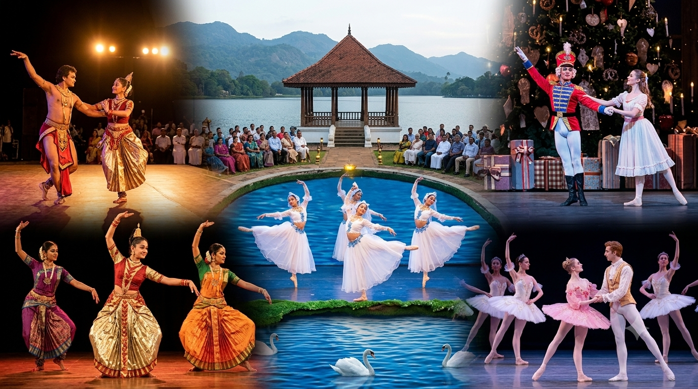

කලාකෘති හා මුද්රා නාට්ය
මුද්රා නාට්ය යනු නර්තනය, සංගීතය, රංගනය සහ වේදිකා නිර්මාණය එකට එක්කරමින් කතාවක් හෝ අදහසක් ඉදිරිපත් කරන විශේෂ කලා මාධ්යයකි.
ශ්රී ලංකාවේ මෙන්ම ලෝකයේද විශිෂ්ට මුද්රා නාට්ය සහ බැලේ කලාකෘති රාශියක් නිර්මාණය වී ඇත.
🇱🇰 පටාචාරා
ශ්රී ලංකාවේ ප්රසිද්ධ මුද්රා නාට්ය කලාකෘතියකි. නර්තනය, සංගීතය සහ රංගනය මගින් කතාන්දරයක් ඉදිරිපත් කරයි.
🎭 බැරිසිල්
ශ්රී ලාංකීය මුද්රා නාට්ය කලාවේ සඳහන් වන තවත් වැදගත් කලාකෘතියකි. නර්තන හා නාට්යමය අංග එකට සම්බන්ධ කර ඉදිරිපත් කරයි.
🦢 Swan Lake
ලෝක ප්රසිද්ධ බැලේ කලාකෘතියකි. සංගීතය, නර්තනය සහ වේදිකා රංගනය එකට එක්කර නිර්මාණය කර ඇත.
🎄 The Nutcracker
නත්තල් සමය සමඟ සම්බන්ධ වූ ලෝක ප්රසිද්ධ බැලේ කලාකෘතියකි. විශිෂ්ට සංගීතය සහ නර්තන අංග මෙහි දැකගත හැක.
🌹 Sleeping Beauty
සුරංගනා කතාවක් ඇසුරින් නිර්මාණය වූ ප්රසිද්ධ බැලේ කලාකෘතියකි. සංගීතය, ඇඳුම් සහ නර්තන රටා මෙහි විශේෂත්වයකි.